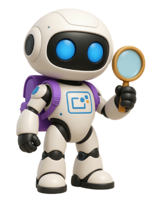
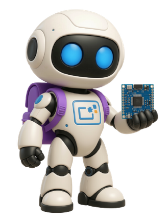
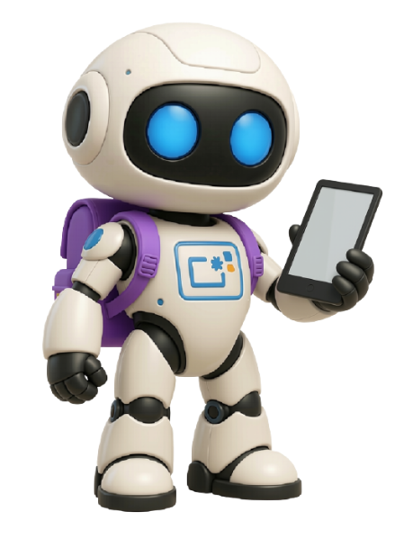
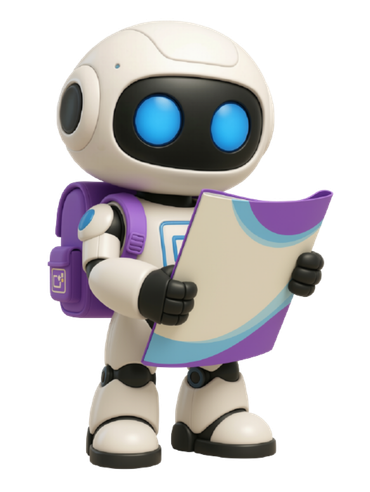

Recursos didácticos
Materiales para el aula
Próximamente incorporaremos los materiales y las propuestas didácticas elaborados desde DTD.
Recursos y propuestas prácticas para explorar, crear y enseñar con tecnología en Educación Infantil y Primaria.

Materiales de robótica educativa, programación y pensamiento computacional para usar en el centro y en el aula.
Guías, tutoriales, e-books y materiales prácticos sobre Canva, inteligencia artificial y otras herramientas educativas.
Materiales didácticos, actividades y propuestas de aula elaborados desde DTD para apoyar y enriquecer la práctica docente del centro.
Un espacio para descubrir, explorar y poner en práctica los materiales de robótica del centro de forma sencilla, útil y conectada con el aula.

Selecciona un material para consultar sus características y propuestas de aula
Programación de recorridos, orientación espacial y pensamiento computacional
Comprobar la carga del robot, seleccionar un tapete adecuado y preparar los destinos del recorrido. Organizar turnos de participación para que el alumnado pueda planificar, programar, observar y revisar las instrucciones.
Materiales complementarios: tapete y, según la actividad, tarjetas de instrucciones e imágenes de destinos.
Dos propuestas que puedes desplegar para preparar la sesión
Objetivo: planificar y ejecutar una secuencia sencilla de movimientos hasta un destino.
Evaluación: observar si identifica el destino, anticipa movimientos y participa en la revisión del recorrido.
Objetivo: comparar recorridos y justificar distintas soluciones a un mismo reto.
Evaluación: valorar si planifica, revisa y explica las diferencias entre los recorridos.
Materiales complementarios disponibles en la carpeta compartida de Educantabria
Abrir recursos de Bee-Bot ↗Descubre los recursos de DigiCraft disponibles en el centro y sus posibilidades educativas.
Incorporaremos aquí las fichas de Edison V2, Sphero Mini, Makey Makey y los demás recursos de esta colección.
Guías y e-books prácticos para el profesorado.
Próximamente: Canva e inteligencia artificial.

Un espacio para consultar y compartir materiales didácticos, actividades y propuestas de aula elaborados desde DTD para acompañar y apoyar al profesorado del centro.

Próximamente incorporaremos los materiales y las propuestas didácticas elaborados desde DTD.